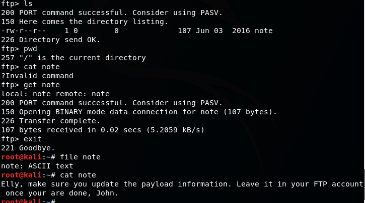

Attacker IP: 10.0.0.22
Target IP: 10.0.0.17
Nmap scan report for 10.0.0.17
Host is up (0.0044s latency).
Not shown: 65523 filtered ports
PORT STATE SERVICE VERSION
20/tcp closed ftp-data
21/tcp open ftp vsftpd 2.0.8 or later
| ftp-anon: Anonymous FTP login allowed (FTP code 230)
|_Can't get directory listing: PASV failed: 550 Permission denied.
| ftp-syst:
| STAT:
| FTP server status:
| Connected to 10.0.0.22
| Logged in as ftp
| TYPE: ASCII
| No session bandwidth limit
| Session timeout in seconds is 300
| Control connection is plain text
| Data connections will be plain text
| At session startup, client count was 3
| vsFTPd 3.0.3 - secure, fast, stable
|_End of status
22/tcp open ssh OpenSSH 7.2p2 Ubuntu 4 (Ubuntu Linux; protocol 2.0)
| ssh-hostkey:
| 2048 81:21:ce:a1:1a:05:b1:69:4f:4d:ed:80:28:e8:99:05 (RSA)
| 256 5b:a5:bb:67:91:1a:51:c2:d3:21:da:c0:ca:f0:db:9e (ECDSA)
|_ 256 6d:01:b7:73:ac:b0:93:6f:fa:b9:89:e6:ae:3c:ab:d3 (ED25519)
53/tcp open domain dnsmasq 2.75
| dns-nsid:
|_ bind.version: dnsmasq-2.75
80/tcp open http PHP cli server 5.5 or later
|_http-title: Site doesn't have a title (text/html; charset=UTF-8).
123/tcp closed ntp
137/tcp closed netbios-ns
138/tcp closed netbios-dgm
139/tcp open netbios-ssn Samba smbd 4.3.9-Ubuntu (workgroup: WORKGROUP)
666/tcp open doom?
| fingerprint-strings:
| NULL:
| message2.jpgUT
| QWux
| "DL[E
| #;3[
| \xf6
| u([r
| qYQq
| Y_?n2
| 3&M~{
| 9-a)T
| L}AJ
|_ .npy.9
3306/tcp open mysql MySQL 5.7.12-0ubuntu1
| mysql-info:
| Protocol: 10
| Version: 5.7.12-0ubuntu1
| Thread ID: 7
| Capabilities flags: 63487
| Some Capabilities: ODBCClient, Support41Auth, LongPassword, ConnectWithDatabase, Speaks41ProtocolOld, SupportsTransactions, SupportsLoadDataLocal, IgnoreSigpipes, IgnoreSpaceBeforeParenthesis, Speaks41ProtocolNew, InteractiveClient, SupportsCompression, DontAllowDatabaseTableColumn, LongColumnFlag, FoundRows, SupportsAuthPlugins, SupportsMultipleResults, SupportsMultipleStatments
| Status: Autocommit
| Salt: | bFVa@g\x11H|\x1CX\x16]sEQ\x03,
|_ Auth Plugin Name: 88
12380/tcp open http Apache httpd 2.4.18 ((Ubuntu))
|_http-server-header: Apache/2.4.18 (Ubuntu)
|_http-title: Tim, we need to-do better next year for Initech
FTP supported anonymous login



There is also port 12380 open. Running dirb on http page gives nothing. If you try https, it'll actually find pages.
There is also robots.txt with this:

Dirb found this stuff:


I did originally open this in the browser and javascript did execute...

Blogblog page has wordpress running


Themes and plugin folders are accessable.
After some research, one of the plugins seemed to have a LFI vuln. It was the advanced video plugin. here's the exploit: https://www.exploit-db.com/exploits/39646/
On github, I came across an updated version of the exploit which was already modified for stapler VM... https://github.com/gtech/39646/blob/master/39646.py
Running it with some modification gets us the wpconfig file

The database info can be used to get into phpmyadmin and access mysql db.

You can also remotely access mysql since the port is open

oh yeah i learned this trick when i was doing pentesterlab, you can use mysql to read files

I could have used the LFI vuln to get this information as well. Anyways, I made a list of usernames and started brute forcing the target using hydra.

One login worked!


I examined the process list and noticed this

Python http server is running on port 8888 but I can't access it..
Also, earlier, I did notice that I'm allowed to access directory for all the users.
jkanode has the most data in the history file.

That gives us two passwords.
logging in as peter gives us root...

After looking at other walkthroughs, I found out that there are more ways to get a foothold on the machine and do privesc. For example, there is a privesc exploit that works on this kernel, which is what I was planning to use next to get root. This VM was pretty fun.